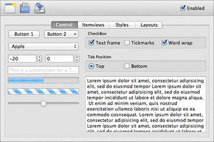

Qt Quick Controls Overview
The Qt Quick Controls provide a set of UI controls to create user interfaces in Qt Quick.
Getting Started
The QML types can be imported into your application using the following import statement in your .qml file.
import QtQuick.Controls 1.2
Creating a basic example
A basic example of a QML file that makes use of controls is shown here:
import QtQuick.Controls 1.2 ApplicationWindow { title: "My Application" Button { text: "Push Me" anchors.centerIn: parent } }
For an overview of the controls provided by Qt Quick Controls, you can look at the Gallery example.

Setting Up Controls from C++
Although we have traditionally used a QQuickView window to display QML files in a C++ application, doing this means you can only set window properties from C++.
With Qt Quick Controls, declare an ApplicationWindow as the root item of your application and launch it by using the QQmlApplicationEngine instead. This ensures that you can control top level window properties from QML.
A basic example of a source file that makes use of controls is shown here:
#include <QApplication> #include <QQmlApplicationEngine> int main(int argc, char *argv[]) { QApplication app(argc, argv); QQmlApplicationEngine engine("main.qml"); return app.exec(); }
Note: We are using QApplication and not QGuiApplication in this example. Though you can use QGuiApplication instead, doing this will eliminate platform-dependent styling. This is because it is relying on the widget module to provide the native look and feel.
Using C++ Data From QML
If you need to register a C++ class to use from QML, you can call, for example, qmlRegisterType() before declaring your QQmlApplicationEngine. You can find the list of all registering functions here.
If you need to expose data to QML components, you need to set them to the context of the current QML engine. See QQmlContext for more information.